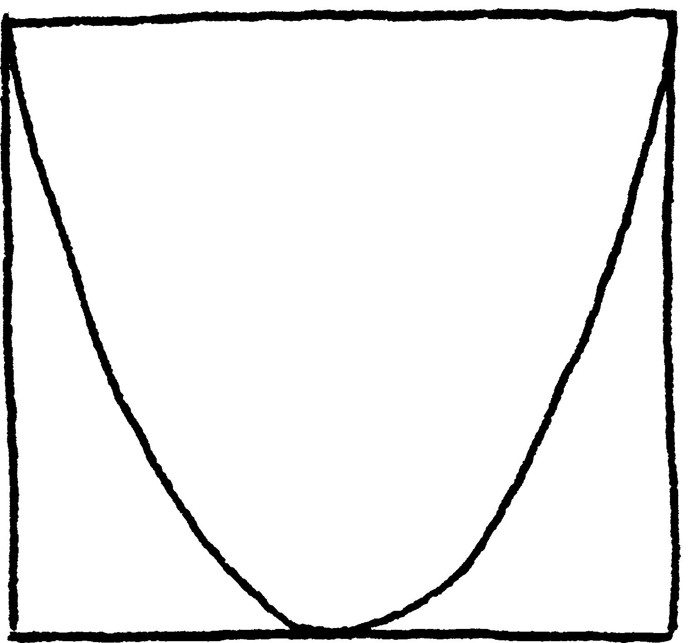
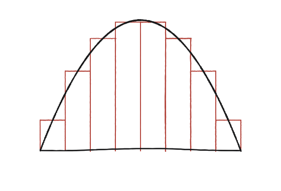
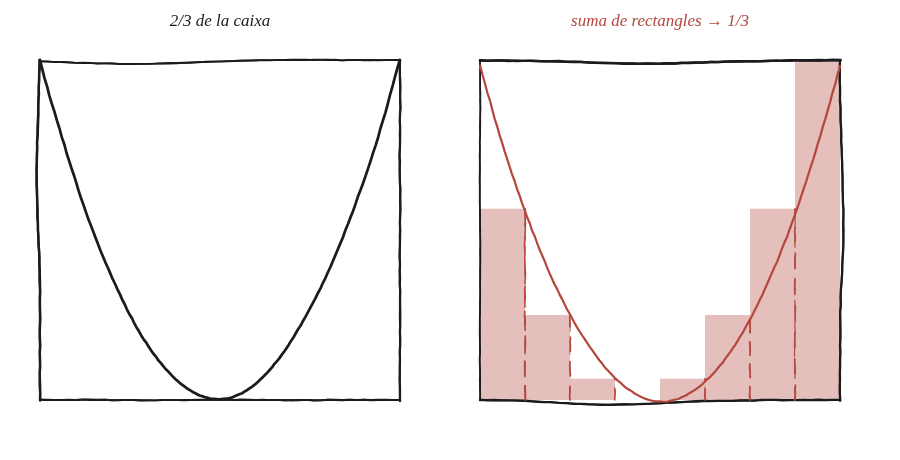

Demostra que una secció parabòlica ocupa exactament dos terços de la seva caixa.

Què hem de produir
Un argument que demostri, sense retòrica d'"infinitèsims", que l'àrea tancada entre l'arc de paràbola i els dos costats superiors de la seva caixa circumscrita és exactament 2/3 de l'àrea total —ni una mica més, ni una mica menys.
Parteix la caixa en franges, no en un sol tros
Divideix la base de la caixa en n franges verticals iguals. A cada franja, la paràbola hi talla un rectangle petit. Sumant les àrees d'aquests n rectangles —la part que queda per sota de la corba— surt una suma coneguda de quadrats consecutius.

La construcció

Tancar-ho
Amb n franges d'amplada 1/n sobre l'interval [0,1], la suma de les àrees dels rectangles per sota de y=x² és (1/n)·Σ(k/n)² per a k=1..n, que val (1/n³)·[n(n+1)(2n+1)/6] = 1/3 + 1/(2n) + 1/(6n²). Aquesta suma no val mai exactament 1/3 —sempre s'hi passa una mica.
El forat de l'argument, i com es tapa
Hi ha aquí una escletxa que separa una demostració d'una comprovació. Aquests rectangles, amb l'alçada presa a l'extrem dret de cada franja, sobresurten per damunt de la corba: no són els de sota, són els que la contenen. Per això la suma sempre passa d'1/3 —i això només diu que l'àrea és com a molt 1/3, encara no que hi sigui igual.
L'altra meitat surt gratis: els mateixos rectangles amb l'alçada a l'extrem esquerre sí que queden per sota de la corba, i la seva suma és la mateixa fórmula amb k=0..n−1, que val 1/3 − 1/(2n) + 1/(6n²). L'àrea queda atrapada entre les dues, 1/3 − 1/(2n) + 1/(6n²) ≤ àrea ≤ 1/3 + 1/(2n) + 1/(6n²), i les dues puntes s'estrenyen al voltant d'1/3 tant com calgui. Ara sí que qualsevol número que no sigui 1/3 es pot desmentir: 0,34 el desmenteix la suma superior amb n gran, i 0,33 el desmenteix la inferior. Aquesta és la diferència entre un pas al límit i un infinitèsim: no cal creure's res, la fórmula és exacta per a cada n.
L'àrea sota la corba y=x² entre 0 i 1 és exactament 1/3 de la caixa —demostrat amb una fórmula exacta per a cada n, no per apel·lació a l'infinit—, i per tant la secció parabòlica (la part de dalt) n'és els 2/3 restants.
Comprovació
Cal fer sempre les dues sumes, que és el que dona la demostració. n=10: la inferior val 0,285 i la superior 0,385 —forquilla ampla, però 1/3 ja hi és a dins. n=100: 0,32835 i 0,33835. n=10000: 0,333283 i 0,333383. La forquilla s'estreny pels dos costats al voltant de 0,33333…, i cap altre número no hi cap. Fet això, 1−1/3=2/3 dona la secció.
Aquest mètode —partir en franges cada cop més fines i sumar una fórmula coneguda— és exactament l'exhauriment que Arquimedes va fer servir, sense cap concepte de límit formal, per calcular aquesta mateixa àrea. La suma de quadrats 1²+2²+...+n² que hi ha darrere val la pena recordar-la, perquè torna a aparèixer sempre que cal sumar quadrats consecutius.